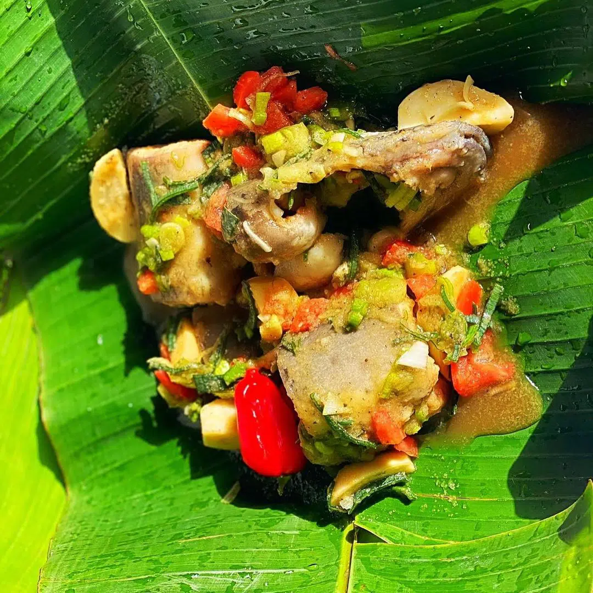
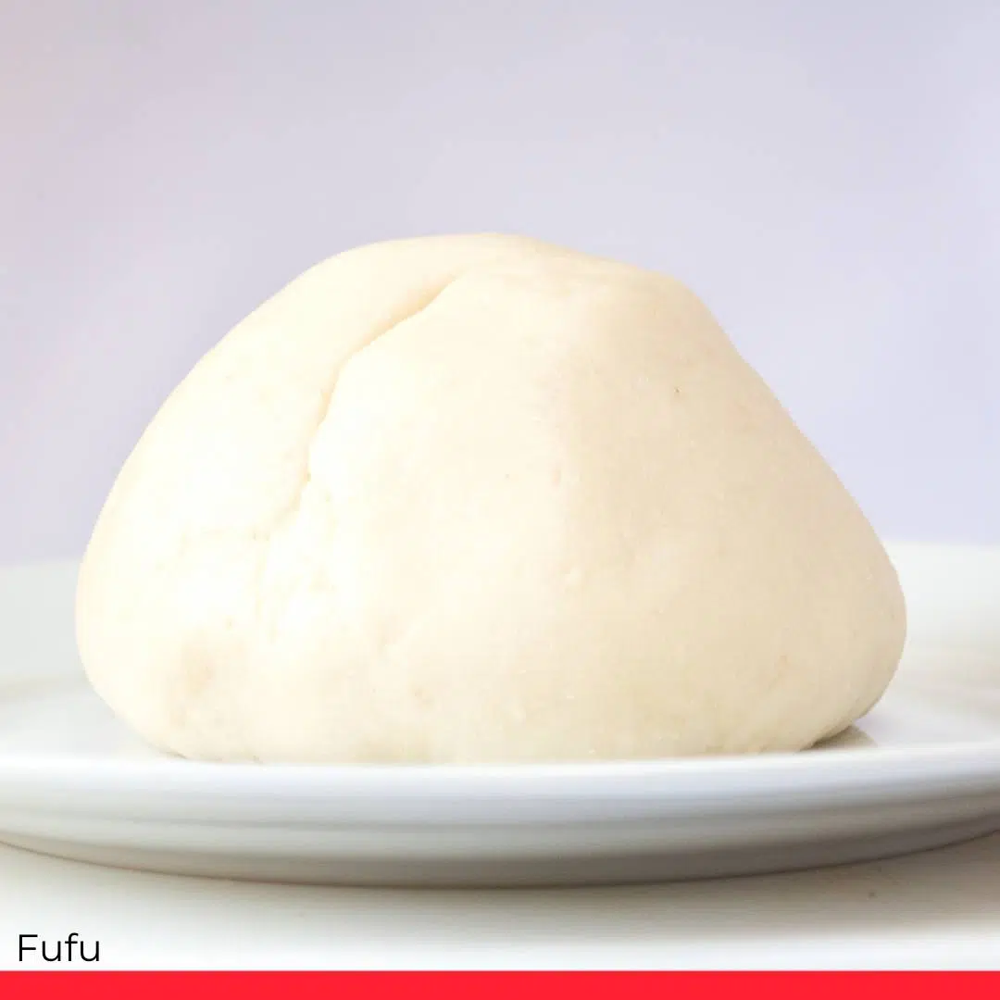
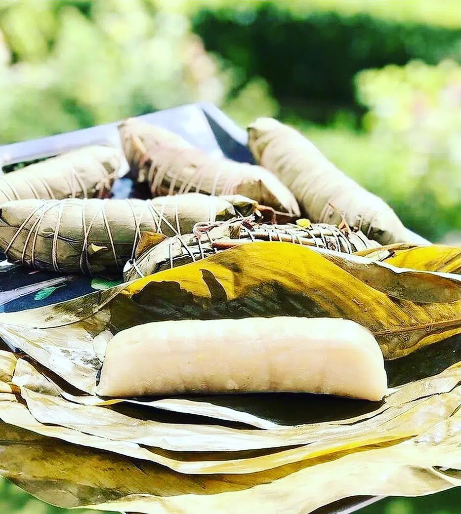
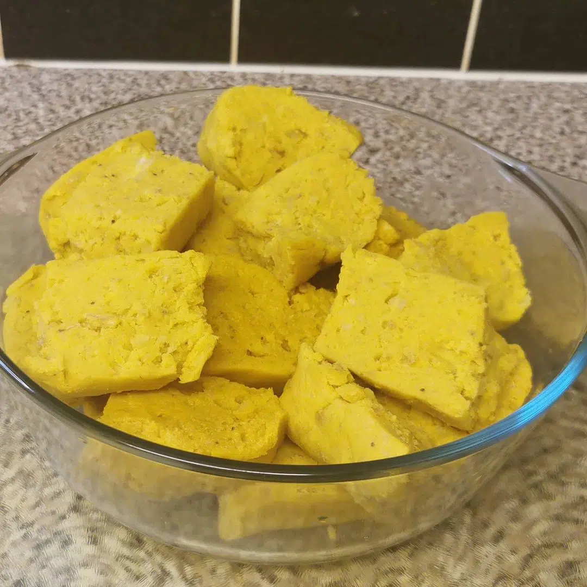
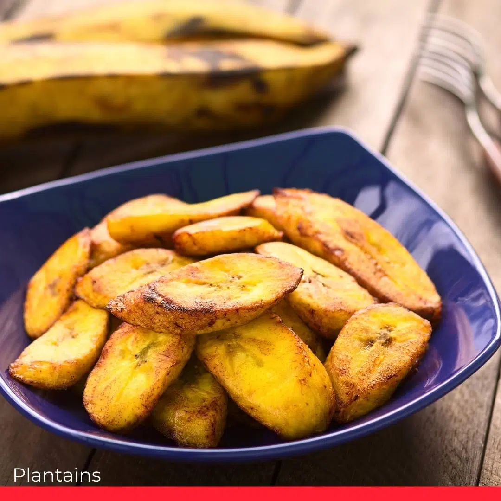
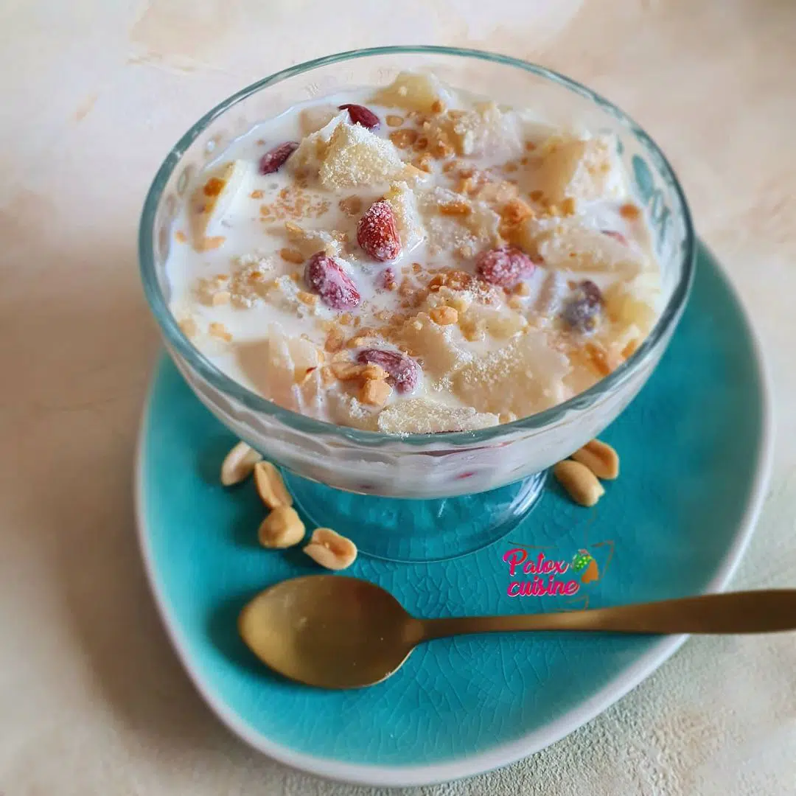
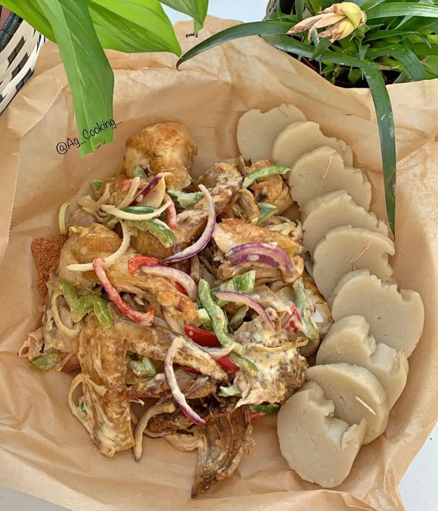
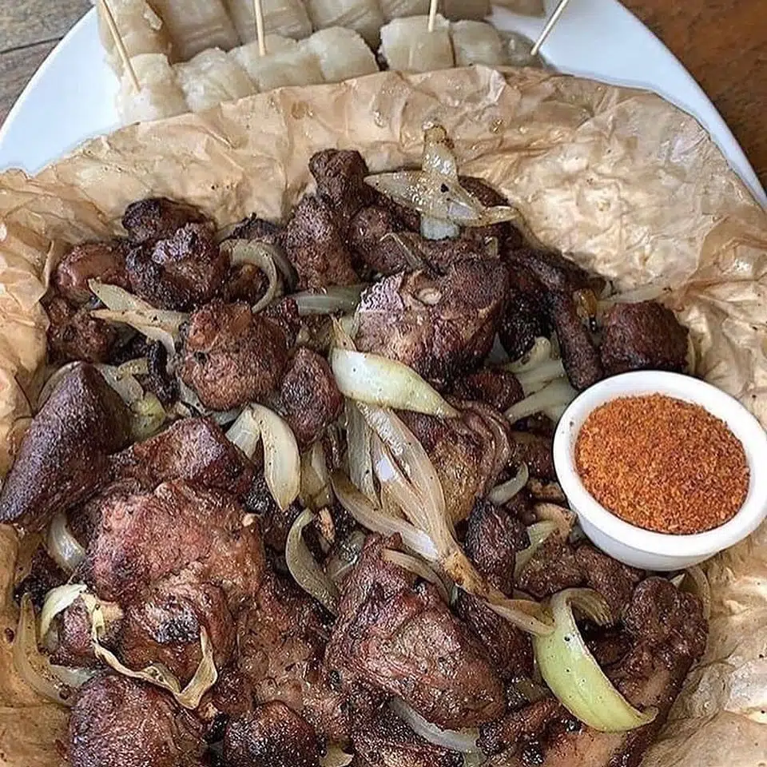

KONGO CUMHURİYETİ
Kongo, 1885'te Belçika tarafindan sömürgeleştirildi.Kongo, kraliyet ailesinin yani sira bazi büyük Belçikali kapitalistleri zenginleştirmek için sömürüldü.Kongo'nun sömürgeleştirilmesi 1960 yilinda sona erdi ve ülke ayni yil bağimsizliğini kazandi.
kongo'nun başkanlari
KONGO'NUN ŞEKLİ

BAYRAK

BAYRAĞIN RENGİNİN ANLAMI:
Gök mavisi barişi simgeler; kirmizi, Kongolu şehitlerin döktüğü kan; sari, ülkenin zenginliği. Yildiz parlak bir geleceği çağriştiriyor
KONGO CUMHURİYETİ HAKKINDA İLGİNÇ GERÇEKLER
KONGOL YEMEĞİ
- LİBOKE: Genellikle domates, tuz ve acİ biberle haşlanmİş balİktan oluşan, muz yapraklarİna veya diğer yabani bitkilere sarİlarak, balİklarİn aromalarini almasi için yapilan bir yemektir. Her şey daha sonra bir izgaraya konur. Sarimsak ve kereviz gibi başka baharatlarin eklenmesi lezzeti arttirir. Balik ayrica tavuk, kabak ve çok daha fazlasi gibi çeşitli diğer malzemelerle değiştirilebilir.Her şey bir tercih meselesi. 
-
FUFU:
.
fufu, Kongo'nun mükemmel bir temel gİda maddesi değilse bile biridir. Kuzeyden güneye, doğudan batİya tüm Kongo sofralarİnda fufu bulunur. İki ana türü vardİr: mİsİr fufu ve manyok fufu. Misir fufusu, tamamen pişene kadar kaynatilan ve ardİndan hamur katilaşana kadar kisik ateşte kaynatilan suyla kariştirilmiş misir unundan yapilir; top olarak servis edilir. Manyok fufu, manyok önce kurutularak ve ardİndan öğütülerek yapilir. Un elde edildikten sonra, hazirlik misir fufu ile hemen hemen aynidir. Ayrica iki unun birlikte kullanilabileceğini de unutmayin.

- Chikwange(kwanga): Fufu'nun yaninda yine manyoktan yapilan ama hazirlanişi daha karmaşik olan chikwange'i buluyoruz. Chikwange(kwanga) genellikle evde hazirlanmaz. Hazirlanma süresi oldukça uzundur; bir ila iki hafta sürebilir. Manyoku hazirlamadan önce birkaç gün suda bekletmeniz ve muz yapraklarina sarip bir saat kaynatmadan önce iki veya üç gün daha süzülmesine izin vermeniz gerekir. Chikwange(kwanga) her türlü sebze veya balikla iyi gider, ancak Kongo'nun büyük şehirlerinde açik havada barbekü ve iyi bir bira ile de keyif alir. 
- LİTUMA: Başka bir popüler eşlik lituma'dir. Fufu'ya benziyor ama kaynatilip sonra soyulup dövülen muzlardan oluşuyor. Bu aşamada, lezzet katmak için salçaya baharat eklenebilir. Lituma, merkez havzanin ekvator bölgelerinden gelen popülasyonlar tarafindan oldukça değerlidir. 
- MAKEMBA(PLANTAİNS): Fransizca adindan da anlaşilacaği gibi, bir tür muzdur, ancak çiğ yenemez; ya yağda kizartilmali, suda kaynatilmali ya da izgara yapilmalidir. Ve yukarida gördüğümüz gibi, kaynatildiğinda, muz lituma haline getirilebilir. Kongo'nun en büyük şehirlerinde kizarmiş muzlar, abur cubur menülerinde çok popüler bir ürün haline geldi, hatta patates kİzartmasİnİ gölgede birakti. 
- Tshomba tshia kabiola: Tshomba tshia kabiola, fermente manyok, yer fistiği, süt ve şekerden yapilan bir tatlidir. Manyok yaklaşik on beş dakika sicak suda bekletilir (çok yumuşatmamaya dikkat edin) ve ardindan süzülerek oda sicakliğindaki suya daldirilarak hava almayan bir kapta 4 gün bekletilir. Dördüncü gün manyok rendelenip fistiklar unutulmadan süt tozu ve şekerle kariştirilir. Son olarak istediğiniz kivama gelene kadar su ekleyin ve buzdolabinda bekletin. 
- POUTLET MAYO(PULE MAYO): Bu yemek son on yilda ortaya çikti ve tavuklu mayonez, Kongolularin en son bulgularindan biri. Tavuk önce çok küçük doğranir ve baharatlanir, ardindan biber, kirmizi biber, soğan ve sarimsak eklenir ve ardindan tavuk parşömen kağidina sarilarak izgara yapilir. Pişirmenin bitiminden on beş dakika önce paket açilir ve yeniden paketlenmeden önce mayonez eklenir; on ila on beş dakika sonra servis edilmeden önce her şey ateşe geri döner 
- YA JEAN: Bir diğer çok popüler yemek ise ya jean; tütsülenmiş keçi etidir. Keçi yerinde kesilir ve doğranir ve herkes kendi parçasni seçer, ardindan kesilir ve baharatlanir. Parçalar parşömen kağidina sarilir ve ardindan izgaraya konur. Bir saatin dörtte üçünden sonra yemek, chikwangue veya kizarmiş muz ve soğuk bir bira ile servis edilir. 
.
.
.
.